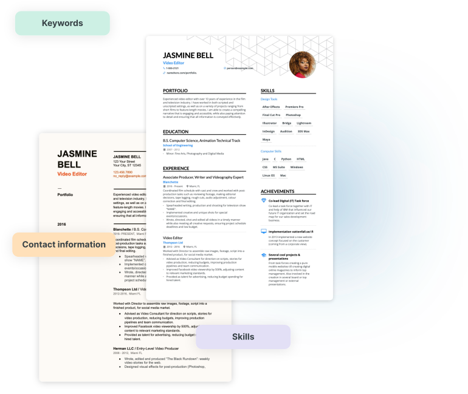

Resume CheckerIs your resume good enough?
A free and fast AI resume checker doing 19 crucial checks to ensure your resume is ready to perform and get you interview callbacks.
Drop your resume here or choose a file.
PDF & DOCX only. Max 2MB file size.


NachiketBhogawar.in’s Resume Checker forms its ATS score with a two-tier system
When you’re applying for a job, there’s a high chance your resume will be screened through an applicant tracking system way before it finds its way on a recruiter’s screen. ATS helps hiring managers find the right candidates by searching for keywords and adding the resume to a database.
That’s why the success of your resume is highly dependent on how optimized your resume is for the job you’re applying for, the resume template you’re using, and what skills and keywords you have included.
The proportion of content we can interpret
Similar to an ATS, we analyze and attempt to comprehend your resume. The greater our understanding of your resume, the more effectively it aligns with a company’s ATS.

![The proportion of content we can interpret]()
What our checker identifies
Although an ATS doesn’t look for spelling mistakes and poorly crafted content, recruitment managers certainly do. The second part of our score is based on the quantifiable achievements you have in your resume and the quality of the written content.
![]()
![]()
Our AI-powered resume checker goes beyond typos and punctuation
We’ve built-in ChatGPT to help you create a resume that’s tailored to the position you’re applying for.
Resume optimization checklist
We check for 19 crucial things across 5 different categories on your resume including content, file type, and keywords in the most important sections of your resume. Here’s a full list of the checks you’ll receive:
Content
ATS parse rate
Repetition of words and phrases
Spelling and grammar
Quantifying impact in experience section with examples
Generate tailored title
Learn about action verbs via a mini FAQ
Format
File format and size
Resume length
Long bullet points with suggestions on how to shorten
Skills suggestion
Hard skills
Soft skills
Resume sections
Contact information
Essential sections
Personality showcase with tips on how to improve
Style
Resume design
Email address
Usage of active voice
Usage of buzzwords and cliches
Hyperlinks in headers are checked for compliance
Rewrite your resume with AI
Get your resume rewritten by the world’s best AI engine (ChatGPT 4.0) in combination with tailored prompts and a fine-tuned model based on your resume and the job ad you’re applying for to save time.
Receive content suggestions based on the sections your resume currently has. Generate a resume summary or objective based on your experience. Get skills suggestions based on the industry you’re applying for. Omit buzzwords, filler words, and irrelevant content.
![]()

Get an ATS understanding check
Part of the resume checker score we assign is based on the parsability rate of your resume. We’ve reverse-engineered the most popular applicant tracking systems currently used and we look for signs of ATS compatibility.
For each resume uploaded, we look for skills and keywords connected to the job and industry you’re applying for, readable contact information, file type, and length. Then, we’ll give you suggestions on how to improve your resume.
Use the best resume builder in the industry
After receiving your checker score you can continue editing and improving your job application with NachiketBhogawar.in’s resume builder. Quickly add, reorder, or remove sections.
Tailor your resume based on the job posting you’re applying for. Ensure that you have the right keywords and skills to match with PDF formatting that an ATS can easily read.
Get your resume score now!
Upload your resume and you’ll get a personalized email with an actionable tasklist.
Drop your resume here or choose a file.
PDF & DOCX only. Max 2MB file size.

![Avatar image]()
Trust the process of allowing someone else who offers this expertise to help you. They know what they are doing.
Your resume is an extension of yourself – make one that’s truly you
Frequently asked questions
What is a resume checker?
A resume checker is a tool or software used to evaluate and improve resumes. It checks for proper formatting, relevant keywords (important for Applicant Tracking Systems), grammar and spelling errors, and content relevance.
NachiketBhogawar.in’s resume checker also assesses consistency in details, suggests customization for different industries, and provides feedback for improvement. We help ensure your resume meets current professional standards and trends and increase your chances of getting noticed by employers and recruiters.
How do I check my resume score?
Upload your resume to NachiketBhogawar.in’s Resume Checker. Once we run the check you will be redirected to another page where you can see your report with a score on the left side of the screen.
Keep in mind that there’s no such thing as an ATS score – no tool online that provides a score gives an actual score.
NachiketBhogawar.in’s resume report scoring system is based on two major things:
- The percentage of parsed content – Like an ATS we parse your resume and we try to understand it. The more we understand from your resume, the better it performs with an ATS used by a company.
- The issues our checker finds – While applicant tracking systems don’t check for typos and badly written content, our checker and recruiting managers do. The second aspect of our scoring depends on the measurable accomplishments in your resume and the caliber of the writing.
How do I improve my resume score?
A higher resume score can be achieved by improving key sections on your resume. Here’s what you can do:
- Rewrite your experience section to include quantifiable achievements. Don’t just state your job duties. Write your accomplishments in the position you’ve held.
- Include skills that are relevant to the position you’re applying for and are included in the job posting.
- Add an accomplishments section to highlight the truly relevant feats of your career.
- Use a PDF resume and a professionally designed resume template.
- Fix spelling and grammar mistakes. Ensure you’re using active voice throughout your resume.
How do I know my resume is ATS compliant?
To ensure your resume is ATS-compliant, integrate relevant keywords from the job description in a natural manner, use simple formatting with a clear layout, and stick to conventional headings like "Work Experience" and "Education”.
Unlike most advice on the internet, using a PDF from a dedicated AI resume builder like NachiketBhogawar.in is better than using a Word or doc file, as it ensures your formatting stays intact. Double-column resumes are just as good as single-column resumes and fonts don’t seem to matter that much as long as they’re easy to read.
Spell out acronyms alongside their full phrases, include a distinct skills section, maintain a consistent work history with clear job titles and employment periods, and meticulously proofread for errors.
What is a good ATS score?
NachiketBhogawar.in’s Resume Checker score is made by two factors combining 19 checks. If your resume scores higher than 80 you can count that it’s mostly good.
Keep in mind, however, that a score is one of many things you should be looking for. Key sections like contact information and experience should be immaculate. Make sure to review your resume in detail before applying for a job.
Can an ATS read PDFs?
Yes. We’ve conducted tests with the most popular applicant tracking systems and it seems that it’s a myth an ATS can’t read a PDF. In fact, PDFs have scored higher as they’re static files that once saved, can’t be edited.
How do I review my resume for errors?
It’s easier to get lost in the details of the separate sections, ignoring how they all come together in the final resume form. A complete resume review will help you focus on the full picture.
You’ll start to notice you’re either missing out on your skills section positioning or that it doesn’t align with your achievements. That’s why you need to take enough time for proofreading and quality checks.
What should I focus on when checking my resume?
We’ve read 1000s of resumes from our users and got the opinions of recruiters on which are the top mistakes people make when building their CV.
Here’s a list of the most commonly occurring mistakes on resumes:
- Avoid cliches and buzzwords
- Don’t lie on your resume
- Edit typos and grammatical errors
- List achievements, not responsibilities
- Include related experience only
- Create multiple tailored resumes
- Embed your personality
- Keep a clean and organized formatting throughout
- Include both your paid and unpaid experience (the latter is especially important for entry-level positions)
Can I create a resume checklist?
Set up a checklist with every bit of information you want your resume to convey at the end. These may include:
- Job achievements of high importance
- Culture fit through personality and relevant hobbies
- Extracurricular activities, relevant websites or projects
Once you have the rough content of your resume, compare it with the checklist so you don’t forget anything important.
Another point of reference should be the job description. All competencies, experience, and skills needed to do the job well are outlined there, so make sure what accomplishments you highlight match the job offer.
To sum up, your resume must answer the following questions:
- Who are you?
- What’s your experience?
- What’s your motivation for joining this company?
- How will you contribute to the company?
Should I read my resume after writing it?
First off, make sure you don’t complete your application with only 30 minutes to spare before the deadline. For this tactic to work, you should start well in advance.
Take time to sleep on your resume, and return to it a couple of days later, or better yet, when you have already forgotten what you wrote.
It will feel like you’re an external reviewer and will spot mistakes that otherwise you’ll have omitted.
Does your resume checker serve other purposes?
Yes, NachiketBhogawar.in’s resume checker is also great for making a targeted resume for a specific job posting. It’s also a resume grammar checker and an overall resume critique that can help you find and fix your mistakes.